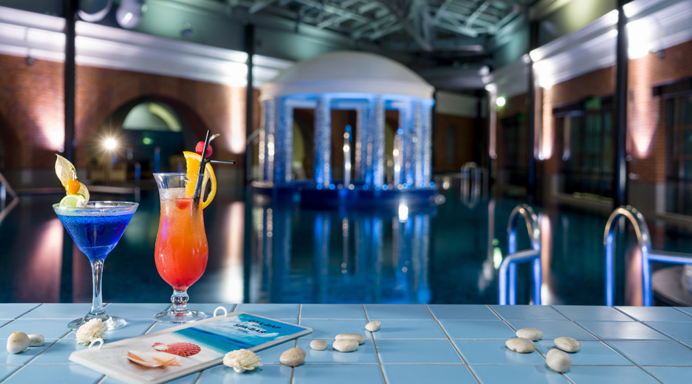
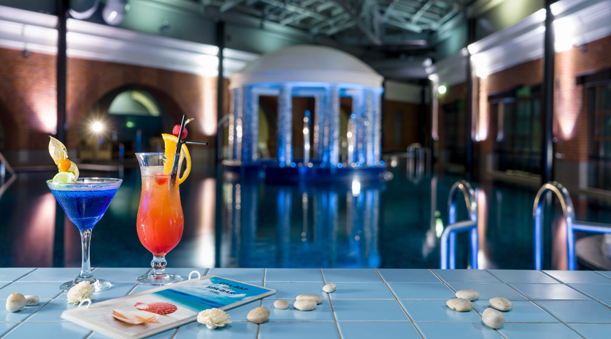

Solo Sokos Hotel Palace Bridge – уникальный отель формата «городской курорт», расположившийся в самом центре. Интерьер отеля сочетает в себе детали старинного здания и современные архитектурные решения в скандинавском стиле.
Solo Sokos Hotel Palace Bridge располагает прекрасными возможностями для поддержания здорового образа жизни: Palace Bridge Wellness Club с впечатляющей спа-зоной с бассейном, спа-салоном Day Spa и уютным фитнес-центром подарят незабываемые впечатления. Кроме того, на третьем этаже расположилась первая в городе крытая академия гольфа — GORKI Golf Academy.
Каждый гость может насладиться блюдами испанской кухни в ресторане Sevilla, а также поужинать в полной темноте в ресторане Dans le Noir?
324 просторных номера оснащены всеми удобствами для комфортного отдыха, а современные конференц-залы, вмещающие до 350 человек, прекрасно подойдут для деловых переговоров, презентаций или тимбилдинга.
Сегодня под кирпичными сводами Solo Sokos Hotel Palace Bridge находится целый мир, предназначенный для того, чтобы Вы могли расслабиться и зарядиться энергией.